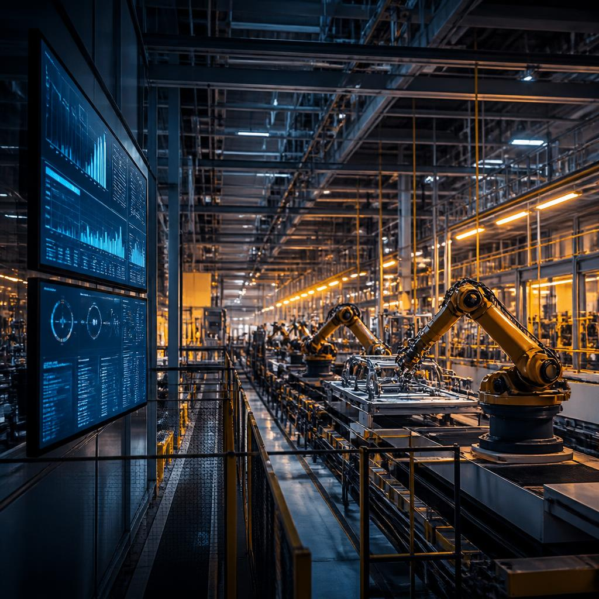
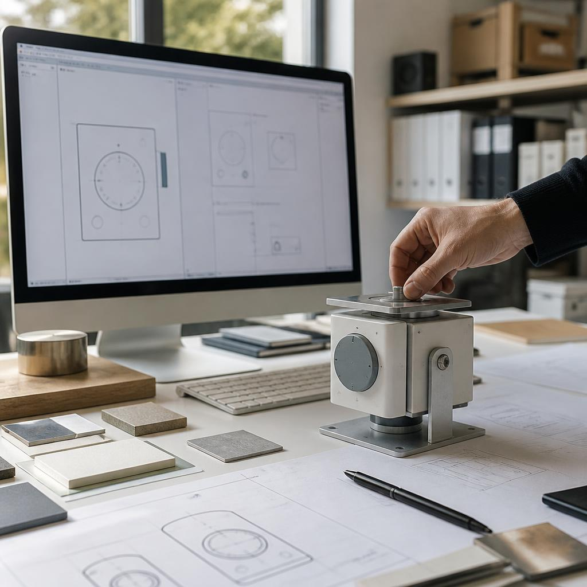
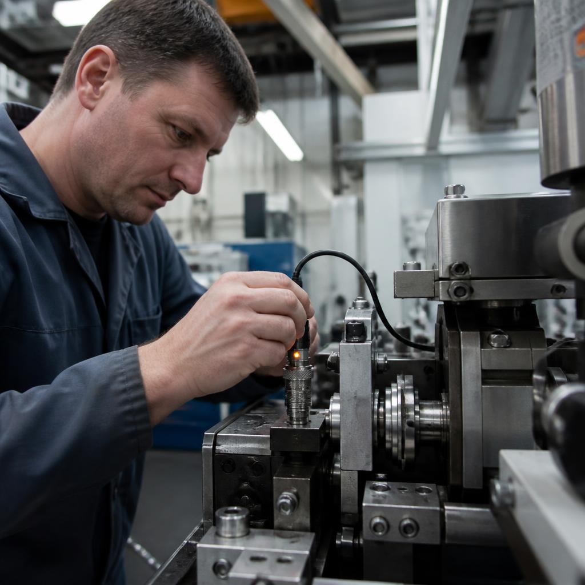

01
IoT & Edge
Wir bringen Sensorik, Maschinen und Cloud zusammen — mit klaren Datenwegen, sicheren Schnittstellen und Zuständen, die man versteht.

Wir bauen digitale Systeme für Unternehmen, die nicht stillstehen. Von der ersten Idee bis zum verlässlichen Betrieb.
02 / Haltung
KERNWERK DIGITAL ist ein Engineering Studio für die digitale Realität. Wir verbinden Strategie, Gestaltung und Technologie — mit der Genauigkeit eines guten Systems.
Kein Showroom. Kein Buzzword-Bingo. Sondern Lösungen, die im Maschinenraum genauso funktionieren wie im Boardroom.
03 / Was wir verbinden
Die besten digitalen Produkte sind keine Inseln. Sie verbinden Daten, Menschen und Abläufe zu einem System, das im Alltag trägt.
Wir bringen Sensorik, Maschinen und Cloud zusammen — mit klaren Datenwegen, sicheren Schnittstellen und Zuständen, die man versteht.
Portale, Dashboards und interne Werkzeuge, die Informationen dorthin bringen, wo Entscheidungen getroffen werden.
Mobile Anwendungen für Teams, die nicht am Schreibtisch sitzen: schnell, robust und auf den echten Ablauf abgestimmt.
Räumliche Modelle, digitale Prototypen und visuelle Szenarien, die komplexe Zusammenhänge früh sichtbar machen.
03 / Leistungen
Von der kleinsten Schnittstelle bis zur gesamten digitalen Infrastruktur. Ein Team, ein Anspruch.
Sensorik, Edge und Plattformen, die Maschinenzustände in klare Entscheidungen übersetzen.
Robuste digitale Plattformen, gebaut für Last, Sicherheit und den nächsten Produktionszyklus.
Native und hybride Produkte, die sich in reale Abläufe einfügen — nicht umgekehrt.
Interfaces mit Haltung: verständlich für Menschen, präzise für komplexe Systeme.
Räumliche Modelle für Produkte, Prozesse und Entscheidungen, bevor sie teuer werden.
05 / Sichtbar machen
Gute Entscheidungen brauchen ein Bild. Wir modellieren Produkte und Prozesse so, dass alle dasselbe sehen.

3D MODELING / VISUAL PROTOTYPE
Gedanken bekommen
eine Oberfläche.
04 / Arbeitsweise
Gründlich ist unser schnellster Weg.
Wir gehen dorthin, wo die Arbeit passiert. In die Halle, ins Lager, an den Tisch.
Wir machen aus vielen Anforderungen eine belastbare Richtung — und sichtbar, was nicht nötig ist.
Wir übergeben kein schwarzes Kästchen. Wir bauen Wissen und Systeme, die Ihr Team weiterträgt.
06 / Einblicke
Ein Produktionssystem, das Maschinendaten aus mehreren Linien in einen gemeinsamen Arbeitsfluss übersetzt.

INDUSTRIAL IOT / 2024
Eine Edge-to-Cloud-Plattform für einen schwäbischen Maschinenbauer. Weniger Stillstand, bessere Entscheidungen.
17.4%
weniger ungeplante
Anlagenstillstände
Ausgangslage
Viele Signale, mehrere Systeme und zu wenig Zeit für die richtige Entscheidung im laufenden Betrieb.
Unser Beitrag
Edge-Gateways, eine klare Datenplattform und ein Dashboard, das Zustände statt Rohdaten zeigt.
Im Alltag
Schichtteams erkennen Abweichungen früher, priorisieren Maßnahmen und geben Wissen direkt zurück ins System.
Stack / System
17,4 % weniger ungeplante Anlagenstillstände
07 / Kontakt
Ein Projekt, eine Frage oder ein System, das klarer werden soll? Schreiben Sie uns.
Systemnotizen / 05
Die besten digitalen Produkte machen ihre Komplexität unsichtbar. Sie geben Teams Orientierung, Maschinen Kontext und Entscheidungen einen klaren nächsten Schritt.